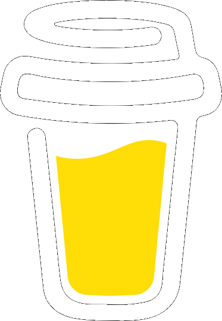

Tormek is a copyrighted logo of Tormek AB. Its presentation on this site is used to help the user quickly understand when specific Tormek tools, jigs, or setting are being used. For specific information regarding Tormek AB, or its products, please refer to the www.Tormek.com.
|  |
I am retired now, but I still appreciate a good cup of coffee. |
Remember: The goal of sharpening is to produce sharp tools, and these tools can injure you if mishandled. Safety measures should be followed to protect yourself and those in your shop. Be sure to read and follow all instructions from the manufacturer, and and utilize proper safety equipment. Never consume alcohol or anything that could impair your judgement before sharpening tools, or using sharp tools.
Comments can be sent via eMail at SharpeningHandbook@Gmail.com.